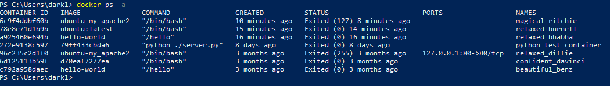
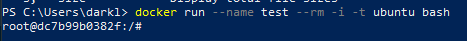
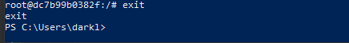
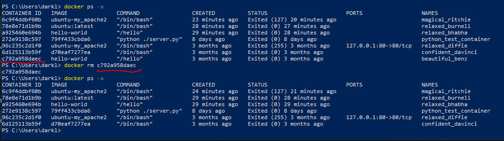
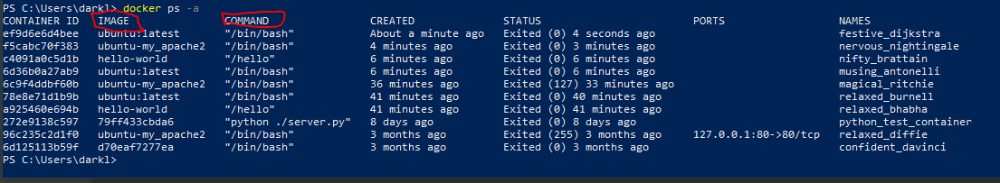
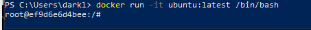

Basic Commands
In this tutorial we'll some simple linux command to navigate through docker:
docker ps -a
-With the command
docker ps -a the user will be able to see all of their containers.

docker run --name [name] --rm -i -t ubuntu bash
-With the command
docker run --name [name] --rm -i -t ubuntu bash, it'll create a containerization and make the user access the container.

Exit
-Inside of the container, if the user would like to go back to the desktop they can use the
exit command.

docker ps rm [container ID]
-With the command
docker ps rm [container ID], the user is able to remove any containers that they don't need anymore.

How to log in to your docker container
-You'll need to use the following command:
docker run -it [name of image] [name of command]. You also have to have docker connected and if you followed the previous tutorial everything should just come up and it should look like this:

